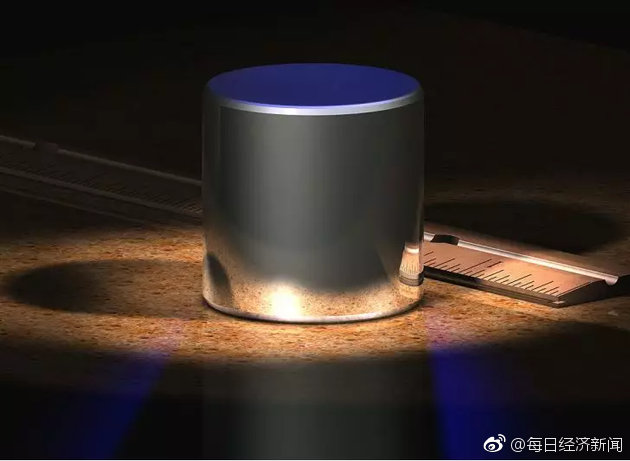
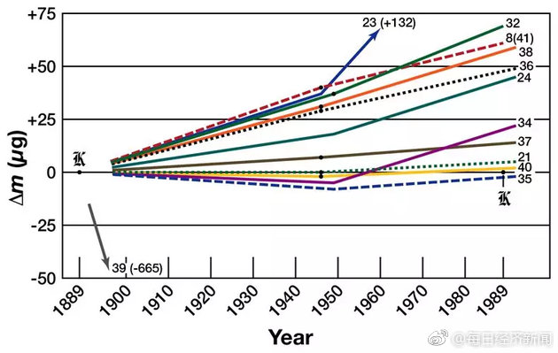

公斤按照物理常数重新定义这事，美国媒体的报道角度是，摆脱了巴黎某个实验室的特定物体成为标准的尴尬事实，摒除权威，让世界所有地方的人平等地享有这个计量单位。国内媒体好像不太喜欢这个角度，报道语气有点诡异，而且下面评论也怪怪的的。
@每日经济新闻:
【一秒有多长，一公斤多重？新标准来了，将颠覆你的认识 】一秒钟有多久？一公斤有多重？一米有多远？...这些与每个人日常生活息息相关的基础问题，却并不是这么容易就能说清楚。随着新版国际单位制的诞生，这套人类社会使用上百年的法则从而被颠覆：重量、长度、电流、温度等7大单位今后将由常数定义，国际千克原器也将退役。12月11日，市场监管总局召开新闻发布会，计量司司长谢军表示，明年5月20日起中国将开始使用新修订后的国际单位制。
】一秒钟有多久？一公斤有多重？一米有多远？...这些与每个人日常生活息息相关的基础问题，却并不是这么容易就能说清楚。随着新版国际单位制的诞生，这套人类社会使用上百年的法则从而被颠覆：重量、长度、电流、温度等7大单位今后将由常数定义，国际千克原器也将退役。12月11日，市场监管总局召开新闻发布会，计量司司长谢军表示，明年5月20日起中国将开始使用新修订后的国际单位制。 一秒有多长，一公斤多重？新标准来了，将颠覆你的认识
一秒有多长，一公斤多重？新标准来了，将颠覆你的认识
- 
- 